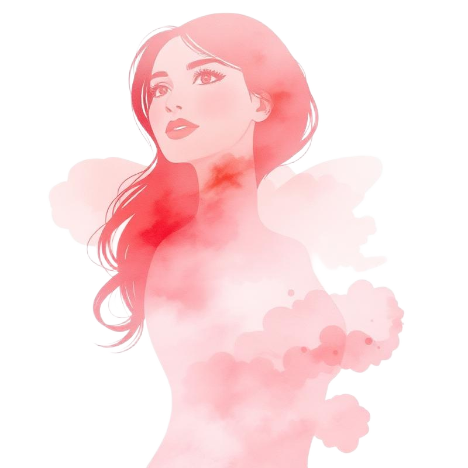
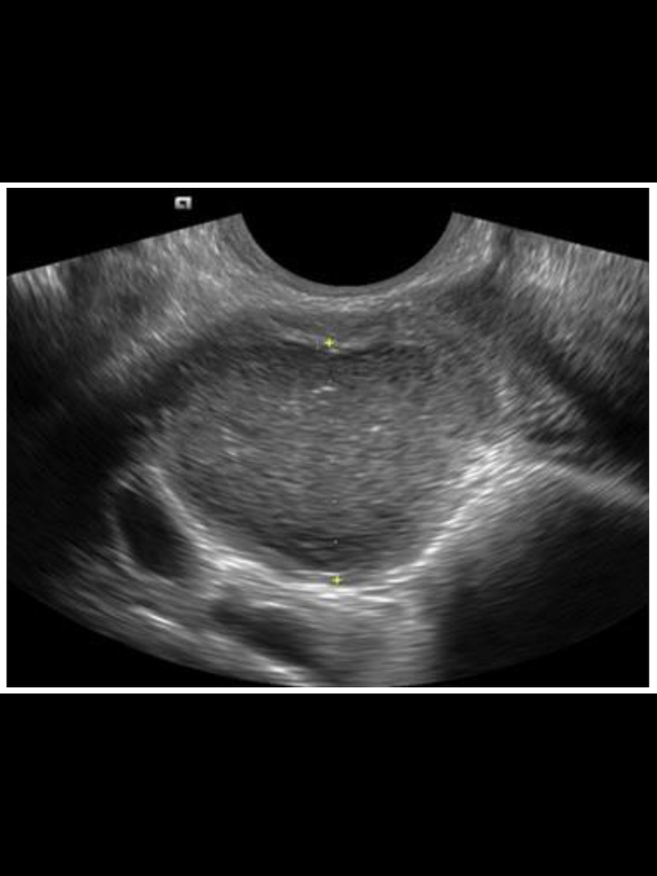
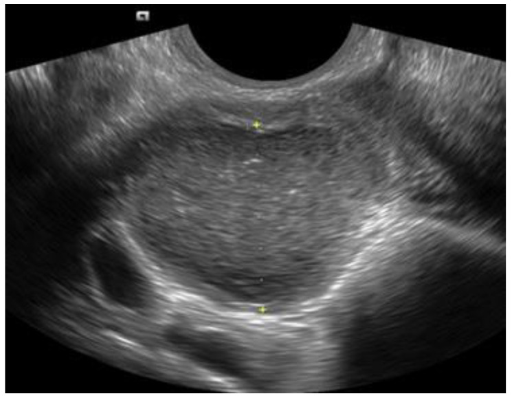
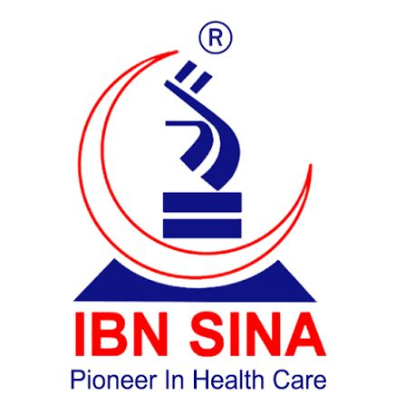
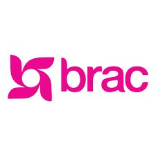
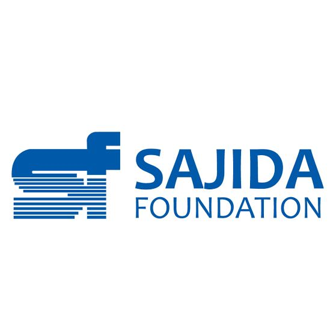
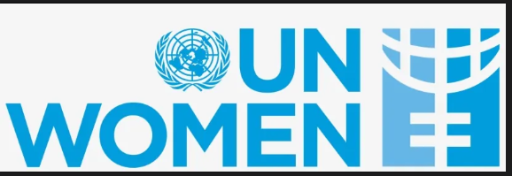
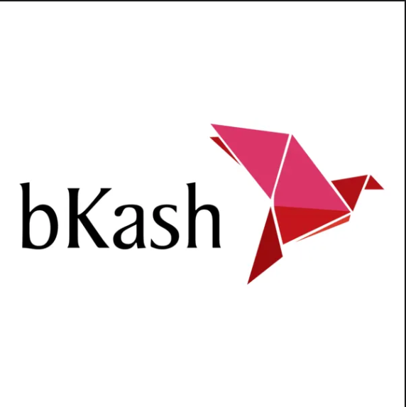
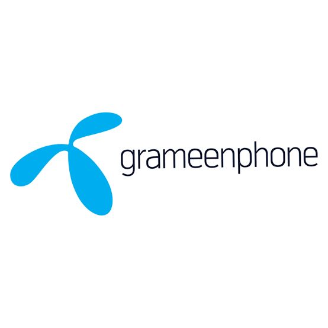
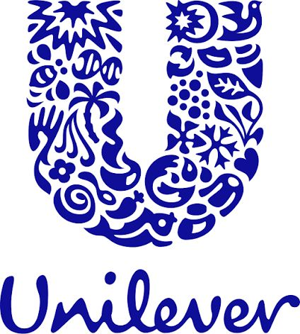

Capture
5/5
Standard pelvic views tracked in the scan workflow.
Endora AI brings the same core experience already present in this codebase into a dedicated website: guided scanning, AI-assisted triage, symptom capture, specialist review, and patient education for endometriosis care.
The site is intentionally baby pink with a corporate Memphis edge: structured blocks, playful geometry, and clean enterprise messaging instead of generic med-tech minimalism.
AI-assisted screening only. Results are not a diagnosis. Specialist confirmation remains required.
Standard pelvic views tracked in the scan workflow.
Representative “good” scan quality shown in the AI review flow.
EndoNet triage model label used in the app’s analysis screen.
Operator, specialist, and patient-facing workflows in one system.
This website now reflects the actual product surface already implemented in the repo.
Operators are guided through uterus sagittal, transverse, adnexal, and pouch of Douglas views with live quality feedback.
Upload clips and images, run preprocessing and inference, then send a structured triage report for confirmation.
Symptom tracking, cycle logging, onboarding, education, appointments, and referrals stay connected to the care journey.

The product in this repo is designed around an operator-friendly mobile flow and a lightweight clinical handoff.
The image set combines local app assets with open-access ultrasound figures cited in the project docs.

Representative ultrasound frame used inside the app experience.
Visual language aligned with the analysis screen’s highlighted regions.

Downloaded from the open-access source documented in the repo’s ultrasound asset notes.
This section uses the local demo video to show how Endora AI can process scan footage, highlight suspicious regions, and support specialist escalation.
DICOM-style review flow with AI-assisted annotation of scan regions, completeness checks, and structured findings for suspected endometriosis workflows.
Captured scan content is processed through the AI pipeline to prepare views, normalize inputs, and surface clinically relevant frames for review.
Endora AI helps operators understand whether the required views and scan quality thresholds have been met during capture.
Suspicious regions and explainability overlays help specialists review findings faster while keeping the final decision human-led.
This trust band uses the organizations shown in your reference and presents them as collaboration, service-acceptance, research, and distribution partners.
Tracking pain day by day helped me explain my symptoms properly to the gynecologist.
The scan and AI summary made it easier to understand what needed specialist review.
I finally had one place for reports, appointments, and symptom patterns.
The community feed made me feel less alone while managing recurring pelvic pain.

Ibn SinaService-acceptance and care-delivery network
BRACCommunity health access and outreach collaboration
Sajida FoundationScreening access and social-impact collaboration
UN WomenGender-equity and women’s health support WHOStandards-aligned health-system reference partner
WHOStandards-aligned health-system reference partner
bKashDigital payment and service-access enabler
GrameenphoneConnectivity and digital-access ecosystem partner
UnileverBrand and awareness collaboration benchmarkWHOStandards-aligned health-system reference partner